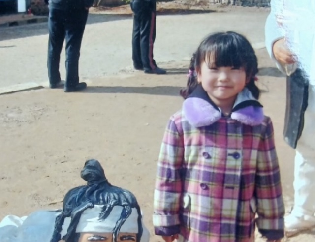
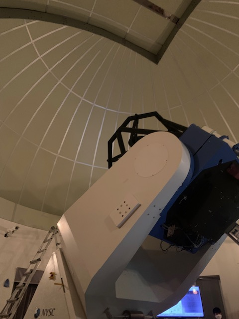
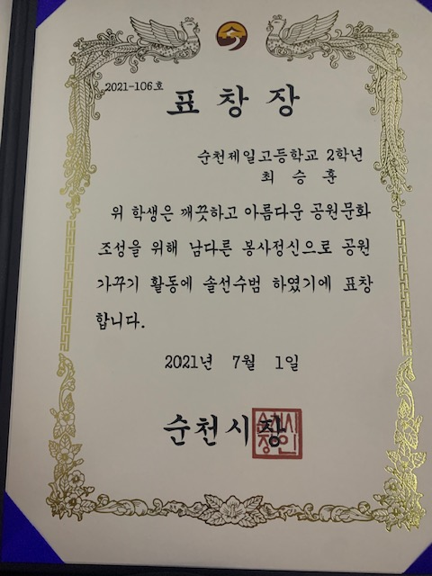
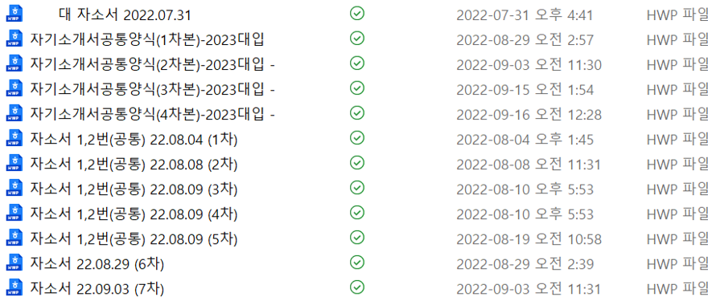

This page details my experiences.
저는 어렸을 때부터 주변에 대한 호기심이 많았고 그렇기에 궁금한 게 생기면 선생님이나 부모님께 항상 질문을 하곤 했습니다.
그래서 어렸을 때부터 지금까지 '왜'라는 말을 항상 입에 달고 사는 것 같습니다.
어릴 때 과학과 우주같은 미지의 존재에 대해 관심이 많아 과학관이나 천문대 등을 많이 방문하기도 하였습니다.
계속 가져왔던 호기심이 과학에 대한 관심을 통해 더욱 더 표출되었던 것 같습니다.
고등학생 때는 좋은 친구들을 많이 사귀게 되어 여러 상도 많이 받게 되었습니다.
친구들과 학업 관련하여 팀으로 대회에 나가서 상을 타기도 하였는데 특히 가장 기억에 남는 것은 이 상이었습니다.
이 상은 저와 친구가 공원의 쓰레기를 줍는 선행을 하고 있던 중 우연히 시의원님의 눈에 들어 표창을 받았습니다.
고등학교 3학년이 되면서 대학 입시를 위해 더욱 매진하게 되었고 이를 위한 자소서도 열심히 작성하였습니다.
하지만 고등학생때 가장 원했던 대학교에 진학하지 못하면서 스스로에 대한 자신감을 많이 잃어버리기도 했습니다.
이전까지는 어떤 일이든 노력하면 안 되는 것은 없다는 생각을 가지며 살아왔었는데 대학 입시를 거치며 제가 갖고 있던 가치관에 의심을 하게 됐습니다.
이에 더불어서 단순히 좋은 학벌을 위한 대입 목표였고 제가 진짜 무엇을 하고 싶은지에 대한 목표는 없었기에 동기부여가 부족했었습니다.
지금 생각해보면 고등학생때 좀 더 열심히 할 수 있었을 텐데라는 생각을 하기도 했습니다.